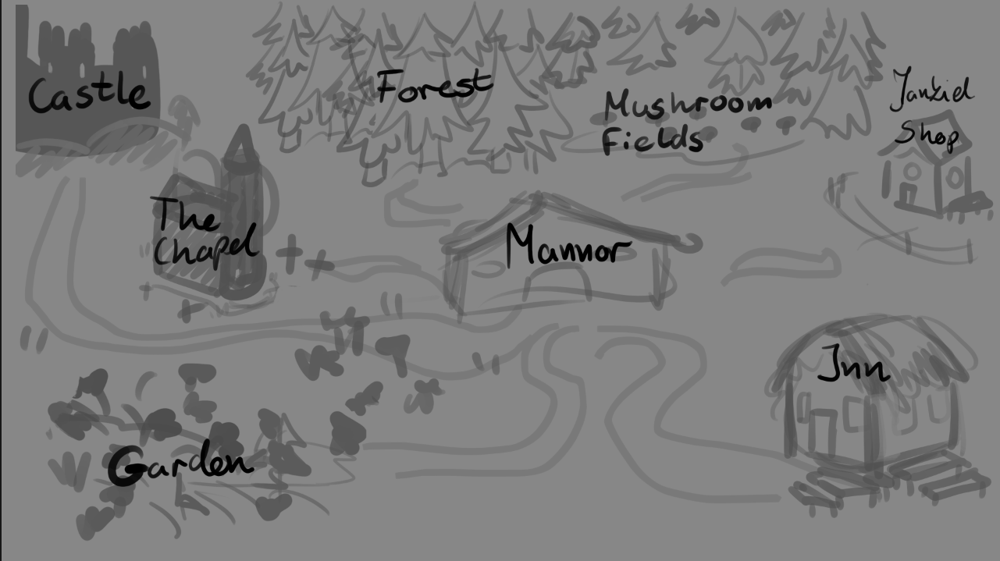

Character Sheet 01
Tadeusz — The Lost Romantic
A warm-hearted, impulsive young noble torn between youthful desire and inherited duty - earnest, brave, and still learning what kind of man he wants to be.

How I tried to turn a linear national epic into a non-linear dating sim - and kept the essence of the original intact.
Serving as Game Designer, Narrative Designer, and Writer, my task was to bridge 19th-century epic poetry with fast-paced, chaotic dating sim mechanics.
The project began with extensive research into dating sims and analyzing adaptations of "Pan Tadeusz". The key was matching the fast-paced, chaotic nature of "Monster Prom" (a huge inspiration for gameplay) while structuring production through detailed design sheets.
Working on the project required rigorous asset management, tracking character poses, expressions, and dialogue branches within structured documentation that could help artists to understand the scope. To achieve this I created a comprehensive design breakdown of first Monster Prom game:
Translating 19th-century epic characters into a modern dating sim while preserving their literary roots and injecting humor. Here are 3 key characters which are my personal favorites and their game archetypes:
🎨 Character Art: Michał Wichuła
A warm-hearted, impulsive young noble torn between youthful desire and inherited duty - earnest, brave, and still learning what kind of man he wants to be.

A dramatic, high-class beauty who demands admiration, flirts for attention, and hides her fear of loneliness behind noble elegance.

A cosmopolitan and endless romantic, yet born with a silver spoon in his mouth. A truly hypersensitive and misunderstood soul in a world full of pragmatists.
The biggest narrative design challenge was converting a linear literary narrative into a flexible system of randomized dating sim encounters.
To address this challenge, I designed a game loop system where players navigate key locations across the estate, breaking down original story beats from Pan Tadeusz into modular, highly replayable dating scenarios.
The game is structured around a 7-day meta loop culminating in a finale that changes based on player choices, character stats, and overall reputation. Each day, the pool of available encounters is randomized and filtered through the player's current stats and location—actively trying to pair them with the character they’ve expressed the most interest in early on.
While many of these encounters are pulled directly from iconic moments in the epic poem, I also expanded the pool with custom, more abstract scenarios derived from the source material to keep the gameplay fresh and unpredictable.

Early concept sketch: Mapping estate locations (Manor, Inn, Chapel) into interactive event locations.
Adapting a story into a non-linear game means random encounters can vary, but you still have to hit those crucial story beats. The trick is letting players experience those core moments from a fresh perspective to keep the narrative engaging.
*Note: Visual assets and UI elements shown in the gameplay are work in progress.
The video below showcases raw gameplay footage, comedic timing, and choice mechanics.